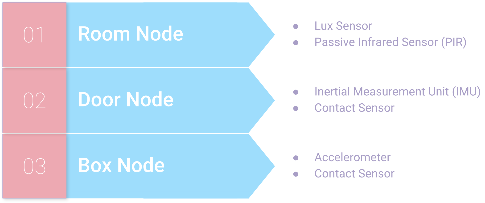
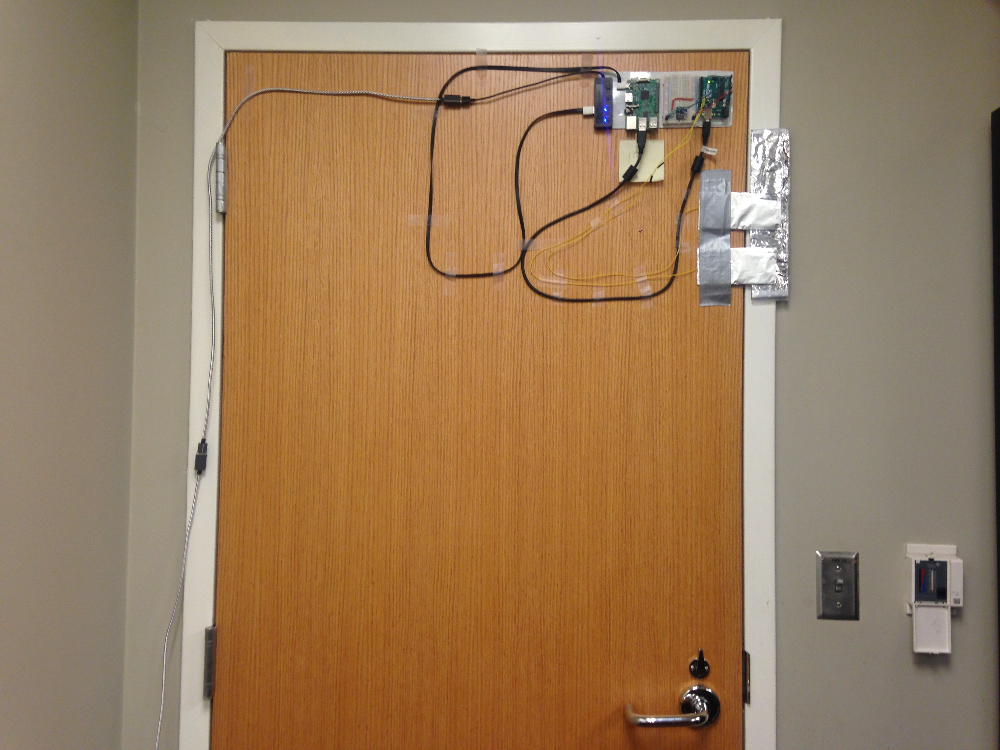
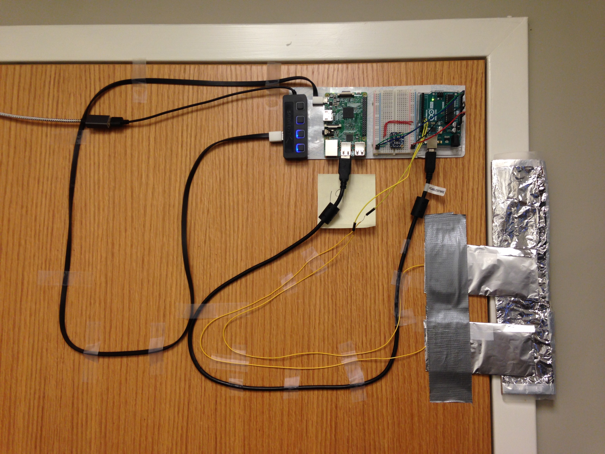
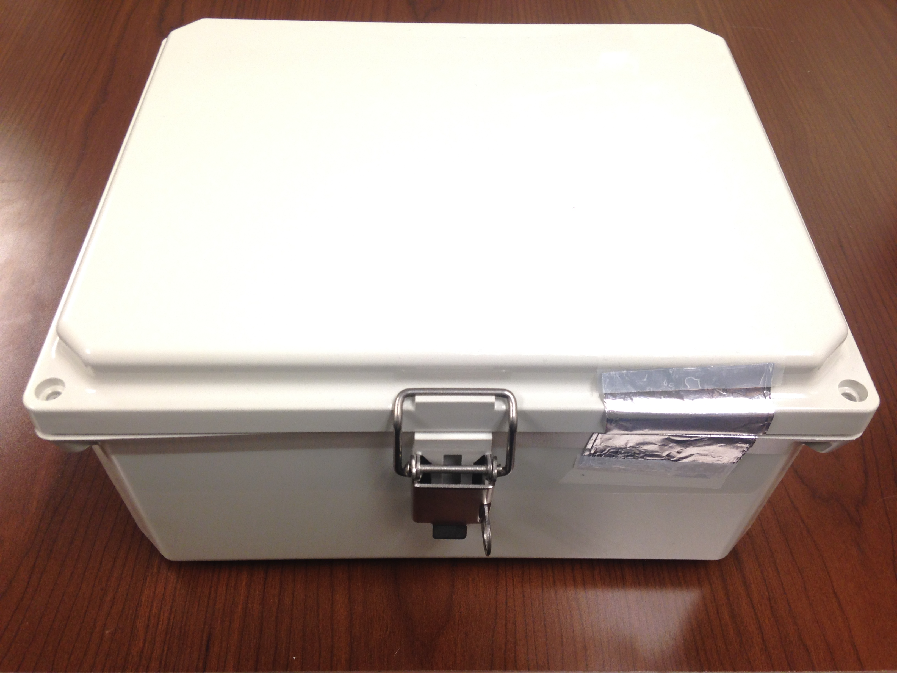
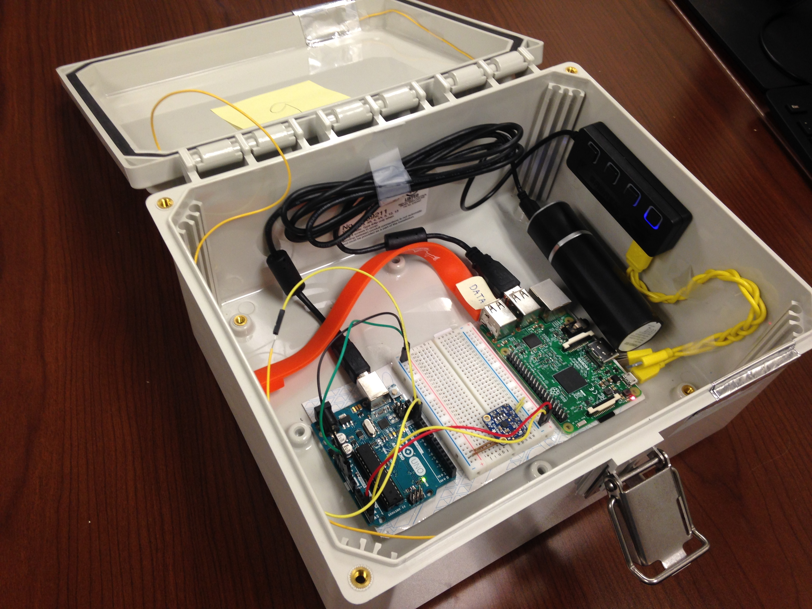
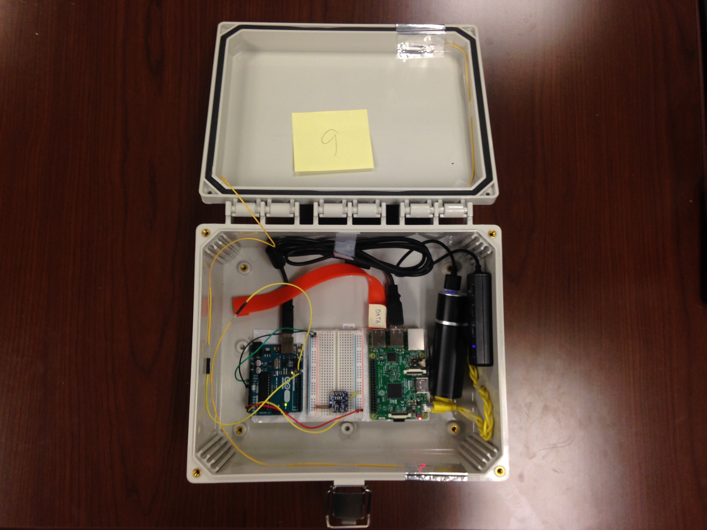
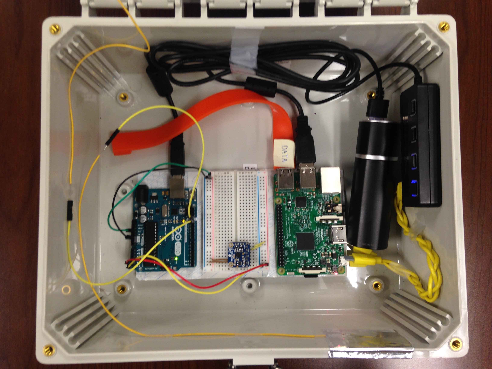
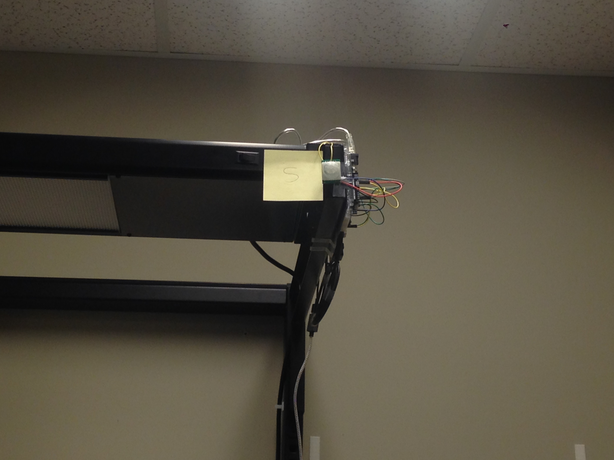
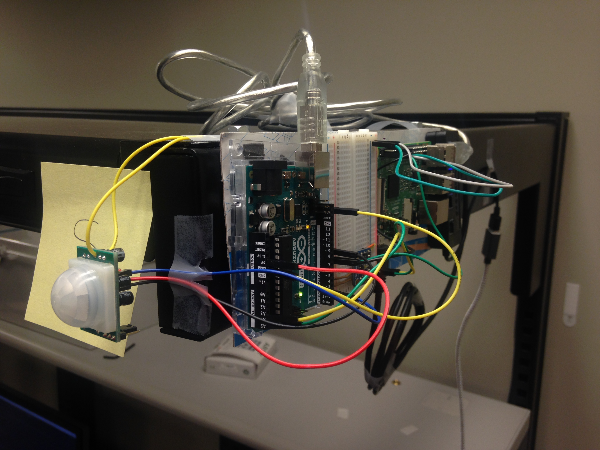
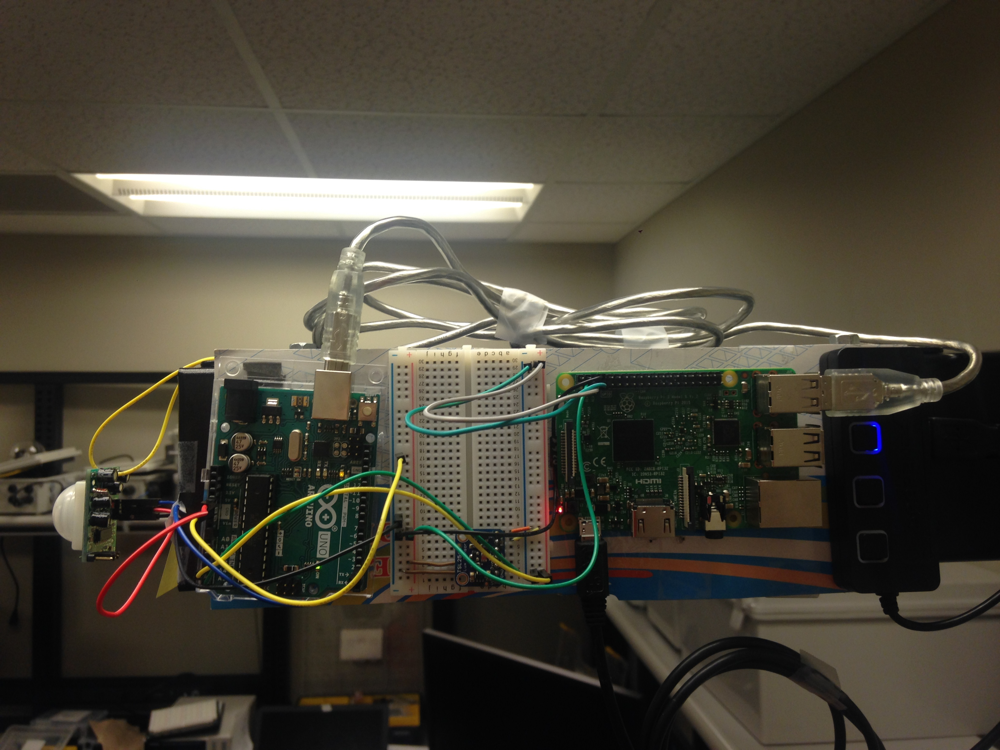

MQTT Protocol
Multiple internet communication protocols were tested throughout to determine which would offer the best connection and security. Web Sockets and HTTP were initially used for testing purposes, but the project now utilizes the lightweight Message Queuing Telemetry Transport (MQTT) server. HTTP utilizes request and response, but MQTT utilizes publish and subscribe. This suits PISTAR better because the MQTT-broker publishes information for the client whenever new data is available. The Eclipse Paho library is able to offer implementation of the MQTT connection conveniently.
Sensor Nodes
After multiple attempts at using NodeMCU modules, a compromise that involves utilizing both the Arduino and Raspberry Pis was achieved. Each node consists of one Raspberry Pi and one Arduino UNO. The Arduino UNO is connected to the Raspberry Pi by the I2C Bus and receives sensor data, subsequently sending it to the Raspberry Pi in a useful form. Once the Raspberry Pi received the data, it then sends it across the network using secured MQTT connections to the main server to calculate threat levels. The sensors are contained in three independent nodes. The Room Node detects ambient changes in the room with both a passive infrared sensor (PIR) and a lux sensor. The Door Node detects interaction and movement of the door of the room with both a contact sensor and an inertial measurement unit (IMU). Finally, the Box Node detects direct tampering with the secure box in the room and includes an accelerometer and a contact sensor.
Sensor Node Pictures
Door Node
 Box Node
   Room Node
  Gateway Node
The hub for the IoT network is a Raspberry Pi 3 operating as an internet access point/gateway for wireless communication with the sensors, offering internet access via GTRI ethernet. This access point allows communication with the Raspberry Pi via SSH from any nearby computer with the correct password. The presence of the Gateway Node classifies the network as Star because the access point Raspberry Pi is the only device connected to the internet. The independent nodes themselves are not connected to the internet directly or to each other. All sensor data is sent from the independent nodes to the Gateway Node and then displayed on the internet.